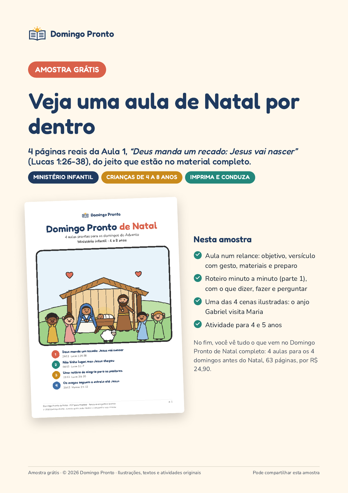

Domingo Pronto
Amostra grátis: uma aula de Natal por dentro
Páginas reais da Aula 1 do Domingo Pronto de Natal, “Deus manda um recado: Jesus vai nascer” (Lucas 1:26-38), para turmas de 4 a 8 anos:
- a aula num relance: objetivo, versículo com gesto e materiais;
- o começo do roteiro, com o que dizer, fazer e perguntar;
- uma cena ilustrada para mostrar durante a história;
- uma atividade para imprimir (4 e 5 anos).

PDF em A4 com 7 páginas, que funciona em impressora preto e branco. É grátis e pode ser compartilhado.
Baixar a amostra (PDF)Não pede cadastro nem e-mail. Dúvidas: joaovictor+P002@rglogistica.com.br · Responsável: João Victor Casali · © 2026 Domingo Pronto.